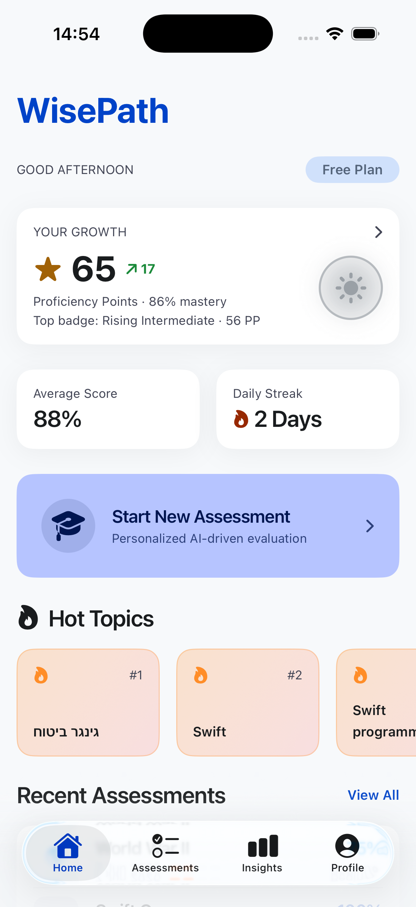
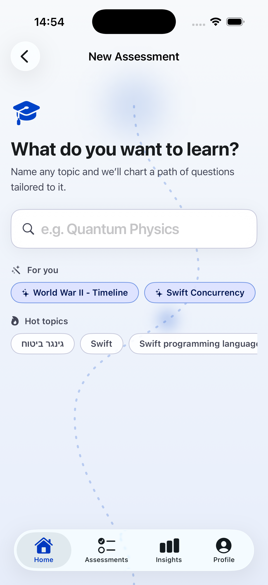
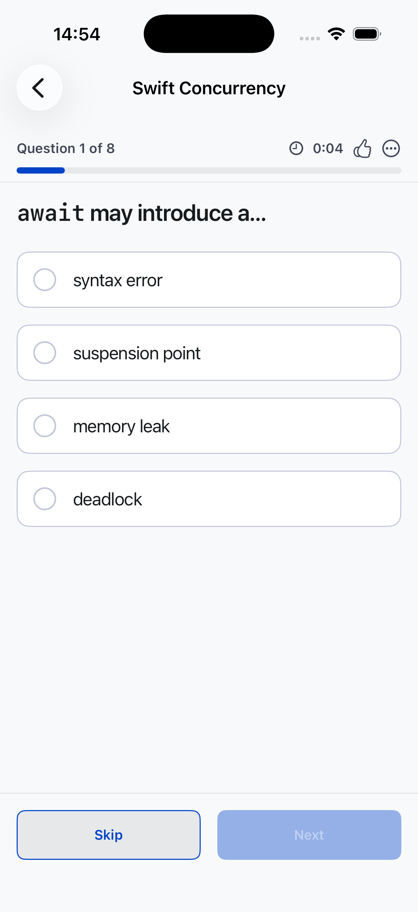
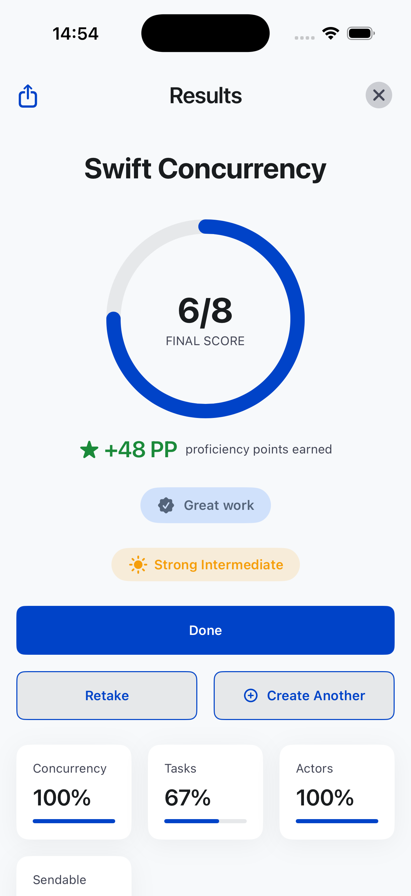
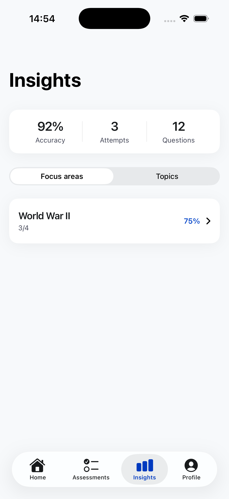
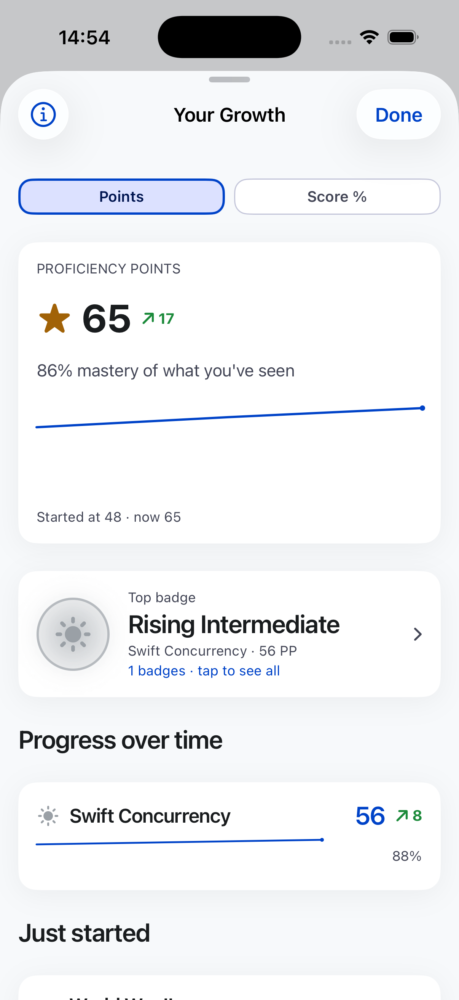
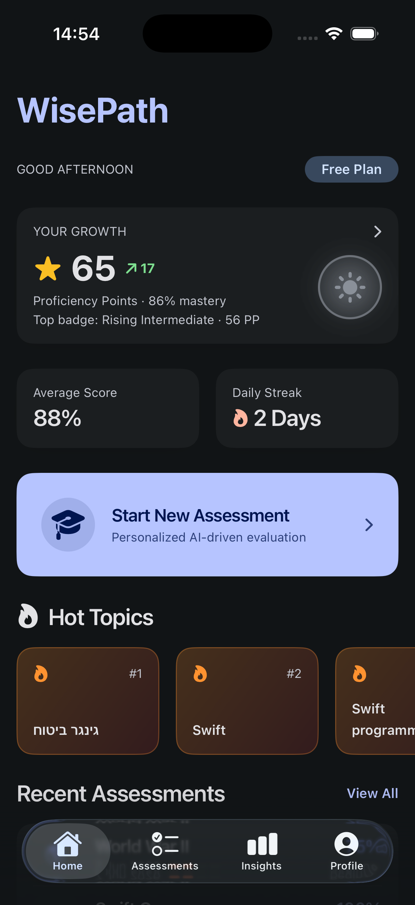

Name any topic — World War II, Swift concurrency, the bond market — and WisePath builds you a sharp, personalized assessment on the spot. Follow a thoughtful path from curiosity to mastery, and watch your proficiency grow with every step.

No fixed course catalog, no waiting. Tell WisePath what you want to understand and its AI drafts a focused set of questions tuned to that exact subject — and to where you already are.
From a curiosity you typed in five seconds to a structured, level-appropriate quiz. Every assessment is built for you, not pulled off a shelf.
Stuck for ideas? Pick from your recent topics, suggestions made for you, or what's trending.

One question at a time, a calm progress bar, and a clean way to skip and come back. WisePath is built for thinking first — no noisy game mechanics in your way, just you and the question.
When you finish, you get a clear score, the proficiency points you earned, and an honest read on the level you're at.
Retake any assessment, or spin up a fresh one on a related angle in a tap.


Type anything you want to learn — or tap a suggestion. WisePath shapes the assessment around it.
Answer a tight set of AI-crafted questions in a distraction-free focus mode.
Earn proficiency points, climb the levels, and see exactly where to push next.
WisePath tracks your accuracy, attempts, and the focus areas where you're strongest — and the ones quietly holding your score back.
It's the difference between "I read about it" and "I can prove it." Your insights turn every quiz into a map of what to study next.

Proficiency points and mastery percentages chart your journey from "just started" to genuinely strong — across every topic you take on.
A gentle line that climbs over time, not a slot machine. Real understanding, measured honestly.
Keep a daily streak going and let your average score tell the long story.

Every topic you take on earns its own badges. Climb four tiers of mastery — Beginner, Intermediate, Adept, Expert — and earn each one in three grades, from Rising to Strong to Ace, as your command deepens. Quiet progress, made into a collection you can see and keep.
Your first real footing in a topic — the leaf that marks a path beginning to grow.
Knowledge that's warming up — steady, bright, and starting to carry real weight.
Fast, confident recall — the spark of someone who really knows their way around.
Genuine command of a topic — the star you keep for good once you've truly earned it.
No grinding, no gimmicks. Twelve badges per topic — four tiers, three grades each — that turn honest progress into genuine recognition, milestone by milestone.
A focused, native iOS experience with a true dark mode for late-night study sessions and early-morning reps.

Your assessments and progress are stored on your device. Sign in with Apple keeps your identity private — WisePath never needs your email. We don't sell your data or run ad trackers. Read the privacy policy →